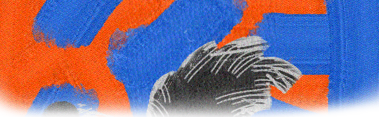

Games are being developed by the incorporation. Here you can look through what's being worked on and what's planned.
Explore the Great Blue in search for your dreams in this World of Darkness based TTRPG. This game takes place in a non-cannon universe of Eiichiro Oda's manga, "One Piece." Do not fear spoilers, for the original story is scrapped and only the world (which is heavily modified) remains. Learn more about it here.
With this suspicious deck of cards, you can add it to any table top game to try to pull some dirty tricks. Decide, as a group, the "Reward" and the "Punishment" for the specific game you are playing. When it is your turn, you may draw from this deck to unleash uncertain chaos. You may be handsomely rewarded for your random knowledge, or be punished for failing to do pushups. Do you want to take the risk to pull a foul play?
To get my hands into video game development, I plan to make a mod for Balatro. Nothing more to say, but I consider this the stairs to cross the wall into starting the next two projects.
This Advance Wars inspired strategy RPG plans to be a true spiritual successor to the gameboy vibes of the original game. You will play as the faction Orange Clock who has been mysteriously transported through time to meet hostile factions who believe you were the ones to scramble time. Will you survive their attacks while figururing out what is going on?
You, a Kindling, are on your small planet you call home. Your kind worship the two lanterns in the sky for they provide the heat your kind need to live. In your lifetime, you have never seen the second lantern, for one day it went past the horizon to never be seen again. Still, you have the great lantern that never moves. That is, until the great calamity began.
This game will be heavily inspired by Ori, Outer Wilds, and a forgotten game named Closure. The plan is a partial metroidbraina with various light based puzzles, combat puzzles, and in your face storytelling that may require you to take notes.
{kind=link}